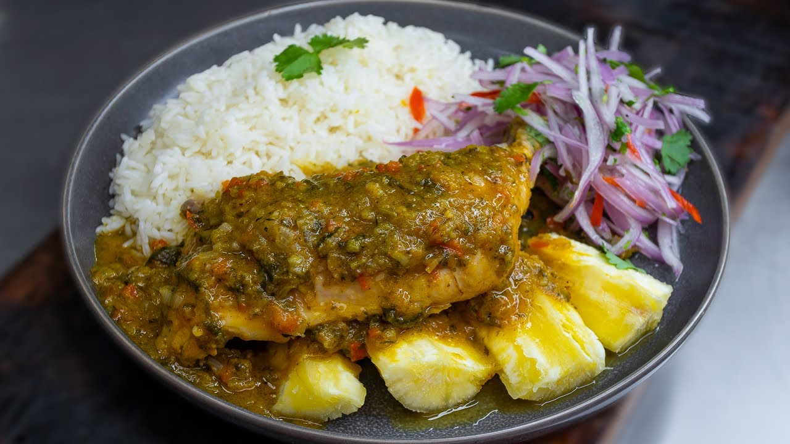

Pollo a la Norteña
Ingredientes
- 1 pollo entero cortado en presas
- 1 cebolla roja grande picada en cubos
- 3 dientes de ajo molidos
- 1 taza de culantro licuado
- 1/2 taza de chicha de jora
- 1/4 taza de ají amarillo molido
- 1/4 taza de ají mirasol molido
- 1 taza de caldo de pollo
- 2 papas amarillas peladas y partidas
- 1 zanahoria en rodajas (opcional)
- Aceite vegetal
- Sal, pimienta y comino al gusto
- Arroz blanco y yuca cocida para acompañar
¡A PREPARAR!
1. Dorar el pollo
- En una olla, calienta aceite y dora las presas de pollo por ambos lados. Retira y reserva
2. Preparar el aderezo
- En la misma olla, sofríe ajo, cebolla, ají amarillo y ají mirasol hasta que la cebolla esté bien cocida
3. Incorporar el culantro
- Agrega el culantro licuado y cocina hasta que cambie a un color verde oscuro
4. Cocinar con chicha
- Añade el pollo reservado, la chicha de jora y el caldo. Salpimienta y deja cocinar a fuego medio por 30-40 minutos
5. Añadir las papas
- Incorpora las papas (y zanahoria si deseas) y cocina hasta que estén tiernas
6. Servir
- Sirve caliente acompañado de arroz blanco, yuca cocida o frejoles según gusto